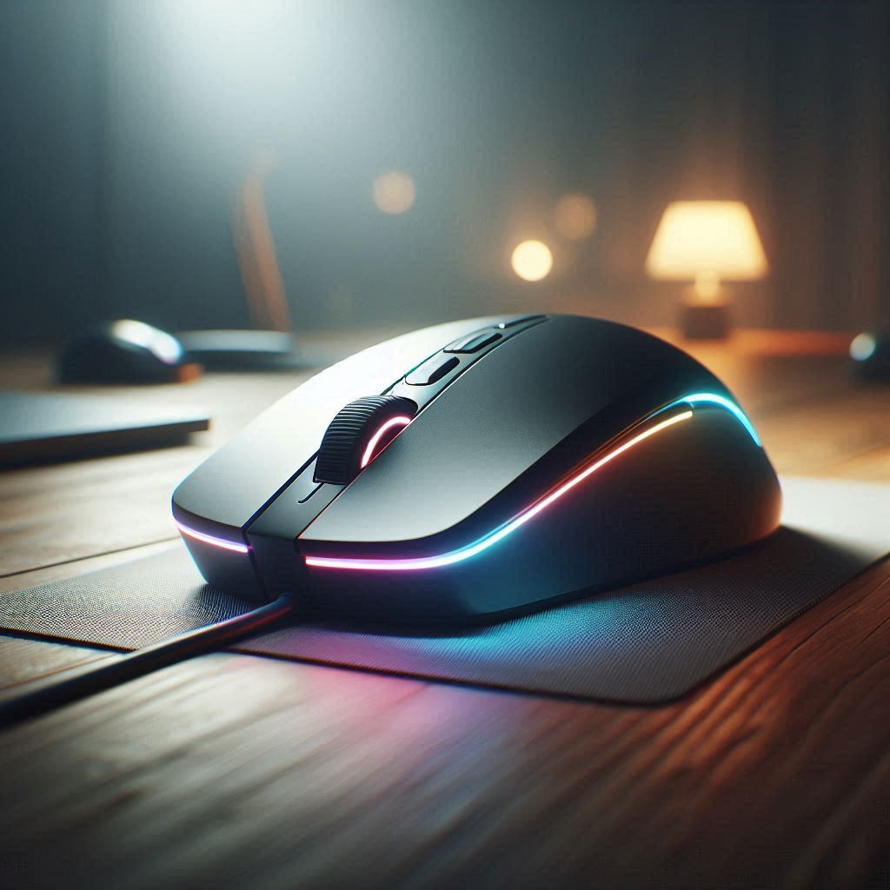

Bienvenidos a TecnoRecomendaciones
En un mundo donde la tecnología avanza a pasos agigantados, elegir el componente adecuado para tu ordenador puede ser una tarea complicada. En TecnoRecomendaciones queremos facilitarte esa decisión. Nuestra misión es ayudarte a encontrar los mejores periféricos y componentes de PC, con recomendaciones claras, análisis objetivos y enlaces directos a Amazon para que puedas comprar fácil y con confianza.
Aquí no vas a encontrar publicidad engañosa ni listas genéricas. Probamos, investigamos y comparamos decenas de productos para ofrecerte solo lo más destacado del mercado, adaptado a tus necesidades y presupuesto.
¿Qué clase de productos recomendamos?
- Tarjetas gráficas (GPU): ¿AMD o NVIDIA? Te mostramos qué modelo te conviene según tu tipo de uso: gaming, diseño, edición de video o multitarea.

- Monitores : Ya sea que busques resolución 4K, tasa de refresco de 144 Hz o paneles IPS para edición profesional, te guiamos en la mejor elección.
- Teclados mecánicos y de membrana: Analizamos modelos para gaming, oficina o escritura, con énfasis en ergonomía, respuesta y durabilidad.

- Ratones (mouses): Comparativas de ratones con y sin cable, sensores ópticos de alta precisión y diseños adaptados a cada tipo de mano y estilo de juego. 
- Auriculares: Sumérgete en el sonido con nuestras recomendaciones de auriculares con y sin micrófono, con énfasis en calidad de audio, comodidad y precio.

üõí Todos los enlaces te llevarán directamente a Amazon para que puedas comprar de forma segura y rápida.